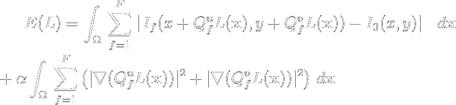

Statistical challenges in
high-dimensional neuroscience
Computational neuroscience seminar
Ben Lansdell
Computation and the mind
“By reasoning, I understand computation. And to compute is to collect the sum of many things added together at the same time, or to know the remainder when one thing has been taken from another.” — Hobbes 1655
“The only way to rectify our reasonings is to make them as tangible as those of the Mathematicians, so that we can find our error at a glance, and when there are disputes among persons, we can simply say: Let us calculate, without further ado, to see who is right.” — Leibniz 1685
Computer science: (un)surprisingly related to cognition
- Turing's universal machines were models of mechanical reasoning used to prove results in metamathematics
- von Neumann's "First draft of the EDVAC" references organs and neurons
- Minksy, Newell, Chomsky, Putnam, Marr, etc
Computation and the brain
"...there is no computation without representation" — Fodor 1981
Neural activity encodes features of stimuli and behavior
- If an individual neuron spikes at times $\{t_i\}$: $$y(t)=\sum_{i=1}^{Y(T)}\delta(t-t_{i}),$$
- then in general $$y(t)\sim f[x(t)].$$
- But starting simply $$y(t)\sim f(k*x(t)),$$
- where $k(\tau)$ are feature vectors.
Linear non-linear Poisson models
In discrete time bins, $\mathbf{t}=(0, h, 2h, \dots, T)$, let $y_i$ be number of spikes $\in(t_{i-1}, t_i]$: $$\begin{align*}y_t &\sim \text{Poisson}(\lambda_t),\\ \lambda_t &= f[\mathbf{x}_t] = f\left(\mu + \sum_i k_i x_{t-i} + \alpha_i y_{t-i}\right)\end{align*}$$
Visual system the canonical example

Adapted from Aljadeff, Lansdell, Fairhall, Kleinfeld Neuron 2016
Representation in primary motor cortex

Scott et al Nature 2001
- Individual neurons in M1 encode parameters related to kinetics and kinematics
- BUT tuning is mixed and labile
Multi-unit encoding in primary motor cortex
- Population vector (PV) encodes reach direction in center-out tasks
- BUT PV can be biased, only applies in certain situations

Georgopoulos et al 1983
Latent dynamics through multi-unit recordings
Instead of such explicit encoding, assume neural activity relies also on $\mathbf{z}_t$, internal processes which we do not observe directly:
Assume $\mathbf{z}_t\in\mathbb{R}^P$ is common to all $J$ units and $P\ll J$
$\Rightarrow$ Recording from large populations of neurons allows inference of $\mathbf{z}_t$
$\Rightarrow$ Estimate $\mathbf{z}_t$ through dimensionality reduction, state-space models, etc

Motor encoding and designing brain-computer interfaces (BCI)
Are representations important in BCI design?
- Single unit BCIs can be trained through biofeedback
- Peak performance independent of PD [Moritz et al 2007]

Law et al 2014
Motor encoding and designing brain-computer interfaces
Conversely
- Neural activity during brain-control relies on natural motor reportoire
- This poses constraints on learning BCI tasks

Sadtler et al 2015
Motor encoding and designing brain-computer interfaces
Conversely
- Neural activity during brain-control relies on natural motor reportoire
- This poses constraints on learning BCI tasks

Sadtler et al 2015
Dual-control brain-computer interfaces
- Allow stroke patients to regain functionality through co-opting healthy motor cortex to control BCI in conjunection with residual movement
- Supernumerary BCIs
- Insight into how learning novel coordination tasks
$\Rightarrow$ How do changes in motor cortical activity accomplish this task?

Milovanovic et al 2015
Dual-control brain-computer interfaces
- One monkey implanted with multi-electrode Utah array in hand/wrist area of primary motor cortex
- Performs random target pursuit task
- Manual control (MC)
- Brain control (BC)
- Dual control (DC)
Milovanovic et al 2015
Dual-control brain-computer interfaces
- When task involves direct conflict between PD and control, what happens?
- First result: amazing brain flexibility (Ivana's paper)
Milovanovic et al 2015
Dual-control brain-computer interfaces
- Is this flexibility supported by similar activity to that observed in BC?
- Look at other recorded units to gain insight

Milovanovic et al 2015
PDs are more similar to manual control than to brain control
- Brain-control induces control-unit specific changes in PD
- Dual-control does not -- suggesting brain-control has greater freedom in changing unit activity
Milovanovic et al 2015
Changes in functional connectivity are less in dual-control than brain-control
- Brain-control induces control-unit specific changes in PD
- Dual-control does not -- suggesting brain-control has greater freedom in changing unit activity
Milovanovic et al 2015
Dimensionality reduction shows intrinsic variance of units predicts brain control performance
- Brain-control induces control-unit specific changes in PD
- Dual-control does not -- suggesting brain-control has greater freedom in changing unit activity
Milovanovic et al 2015
Cursor control requires intrinsic variance of control units
- Brain-control induces control-unit specific changes in PD
- Dual-control does not -- suggesting brain-control has greater freedom in changing unit activity
Milovanovic et al 2015
Summary
- Tuning and connectivity analysis suggest dual-control task requires cortical activity more similar to that observed in manual control task
- Intrinsic variance of control units shows
Milovanovic et al 2015
Hydra: a model system for neural control
- Cnidaria: LCA with humans ~800MYA
- Diploblast: no bilateral symmetry
- Nerve net
Hydra: a model system for neural control

Tomás J. Ryan & Seth G. N. Grant 2009
Hydra: a model system for neural control

Technau and Steele 2011
Hydra: a model system for neural control
- Oscillatory behaviors
- Target for neurobiological control
- Requires parameterization of behavior and neuron tracking

Milovanovic et al 2015
Whole-body calcium imaging in cnidaria

Multi-frame optic flow image registration

Multi-frame optic flow image registration
- Dense optic flow with subspace constraints
- For each pixel find linear combination of basis paths, $L$, that minimize energy
 - $I_f$ = image at frame $f$,
- $I_0$ = reference frame (need not be first frame of video),
- $Q_f^u$, $Q_f^v$ = basis paths at frame $f$,
- $\alpha$ = smoothness regularizer
Tracking with optic flow
Tracking with optic flow: performance
Comparison to hand annotated neuron tracks
Per frame:
- at least 52% neurons are tracked within 6px
- on average 82% neurons tracked within 6px
- 42% neurons tracked within 6 px throughout all video
MFSF in longer sequences
- Changing appearance/pose in a long sequence → multiple reference frames
- Current/simplest approach: split into multiple stacks and run independently

WebGL makes toroids
Summary

Acknowledgments
- Adrienne Fairhall
- Committee:
- Nathan Kutz
- Eric Shea-Brown
- Chet Moritz
- Emily Fox
- Ivana Milovanovic
- Cooper Mellema
- Kevin Ford
- Fairhall lab
- Moritz lab
- Charlie Matlack
- Robert Robinson
- Eberhard Fetz
- Yuste lab